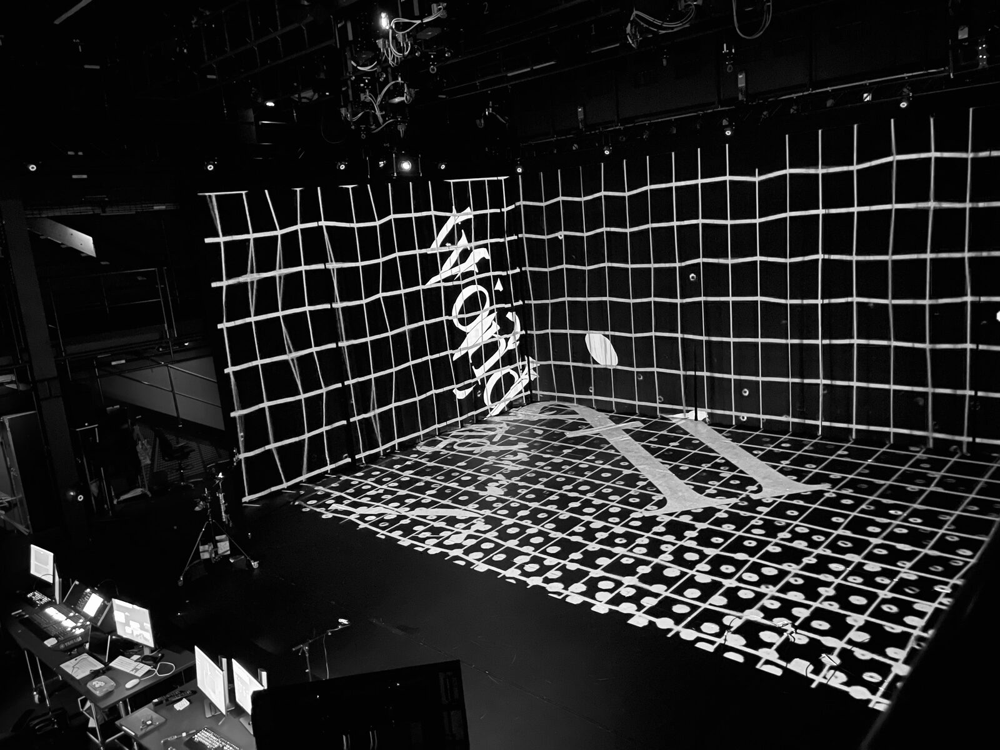
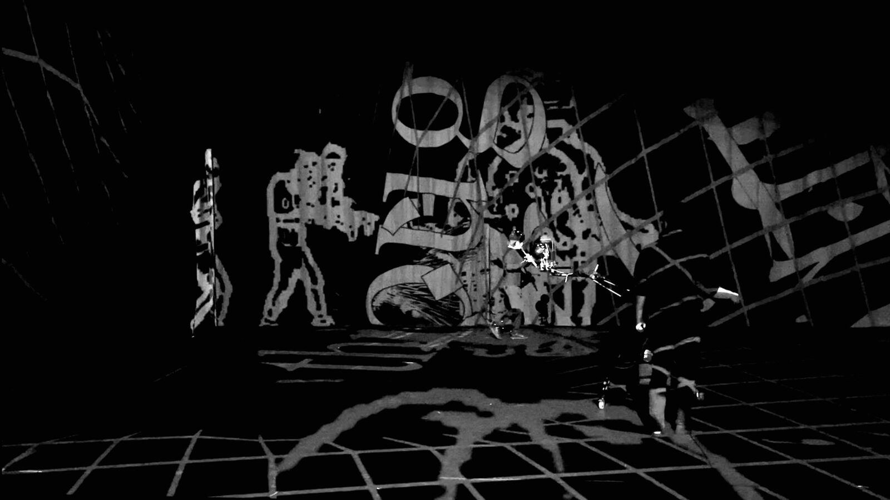
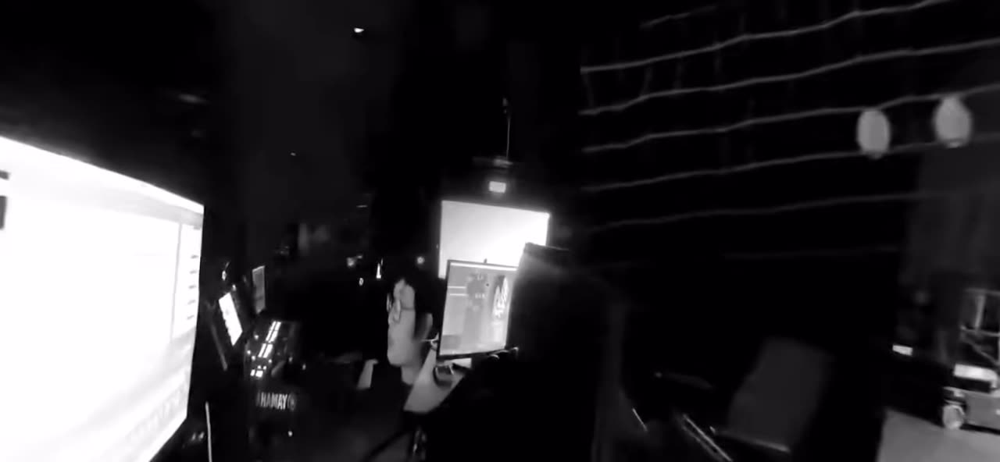

black box fading
Abstract
black box fading, for sensor-augmented flute (Chaosflöte) and improvisation machine (AIYA), is an immersive experience that draws upon the performance interplay between human and machine and the shifting perceptions of machine agency and human-machine interactions that result from it. This work is presented as a 360° video with first-order Ambisonics and head-tracking in VR.
Modulating sound behaviors, reactive visual projections, shifting perceptions of space and scale, and the unconventional 360° editing techniques play along the spectrums of reality & surreality and between performance & edited composition, eventually transforming the work into a multifaceted experience of its own. Listeners are invited to explore the virtual space as both a concert and installation, a journey inside a box.
Project Description
black box fading, for sensor-augmented flute (Chaosflöte) and improvisation machine (AIYA), is an immersive experience that draws upon the performance interplay between human and machine and the shifting perceptions of machine agency and human-machine interactions that result from it. This work is presented as a 360° video with first-order Ambisonics and head-tracking in VR.
The human performer in this work gradually discovers her relationship with the improvisation machine as going beyond the mutual playing of improvised music and encompassing dimensions of merging identities, perceptions of spatial presence/absence, and shifting hierarchies in performance. The video itself shifts between a documentation of a performance into a documentation of something in between a performance and an interactive installation. Modulating sound behaviors, reactive visual projections, shifting perceptions of space and scale, and unconventional 360° editing techniques play along the spectrums of reality & surreality and between performance & edited composition, eventually transforming the work into a multifaceted piece of its own.
The technical production of black boxing fading makes use of a 3D tracking system (OptiTrack) in conjunction with the sensors of the Chaosflöte, which feed into AIYA and into the framework for generating live sounds and visuals. AIYA operates on the basis of live recorded buffers, which are then used as the foundation for the machine’s possible sonic material—the selection and transformation of which are guided by its reactions to human motion. Combined with a creative use of spatialization in Ambisonics, it becomes increasingly difficult to distinguish between which sounds are emitted from the human and which from the machine. The result is a closely shared sound aesthetic between human and machine that serves as another layer of play as it causes one to consider human and machine as not only at times separate identities, but also at times extensions of each other. This dimension of the work draws upon Andy Clark and David Chalmer’s concept of the extended mind and active externalism,[1] where the external environment functions as an integrated component of one’s cognitive processes. In playing with what is considered internal and external, black box fading gradually blurs the lines between human and machine and suggests both as – in the spirit of posthumanism – extended minds of each other.
[1] Clark, A., & Chalmers, D. (1998). The Extended Mind. The Extended Mind, 58(1), 1–392. https://doi.org/10.1111/1467-8284.00096
Installation Notes
This work is presented as a 360° video with first-order Ambisonics and head-tracking in VR. It is recommended to watch with headphones and use either Google Cardboard or a dedicated VR headset in order to fully experience the work. If watching in VR is not possible, one can still watch the work as a normal 360° video via the YouTube mobile app or desktop YouTube site. At the time of writing, spatial audio panning is only supported on iOS (YouTube app), Chrome/Firefox (YouTube site), and dedicated VR headsets.
Installation Requirements
Feasibility and Viewing Modes
The nature of this performance is that it provides a flexible viewing experience, considering the relative uncertainty surrounding the current pandemic. Thus, the work can be viewed in the following modes, depending on what is possible:
1. The first (and preferred) mode is to view the performance through a VR headset, such as the Oculus Quest 2, in a pseudo-installation format, on-site.
2. The second, more accessible, option is to view the performance using Google Cardboard and YouTube VR using participants’ smartphones. This allows more people to view the performance at once, as cardboard headsets are relatively inexpensive to order and transport (anywhere from $5-12 per headset).
3. Finally, the performance can also be seen “off-site” via YouTube 360* or Vimeo 360, where the audience can pan through the 360° landscape with the gyroscope of the phone, or view it on the computer. If the audience already has their own VR headset (cardboard or otherwise), they can also view it via YouTube VR* at home.
*I am aware that using YouTube in China is not allowed, so if accepted, I will look into hosting the video elsewhere if the 2nd or 3rd proposed viewing options are selected.
Equipment (organized by the chosen viewing option)
Mode 1 (VR/Oculus, on-site) | Mode 2 (VR/Google Cardboard, on-site) | Mode 3 (360° video, off-site) |
Oculus Rift 2 (2-4 headsets preferred) | Google Cardboard headsets (individual headsets for each viewer for the corona-friendly option or at least 10-15 headsets that are reused) | No additional equipment necessary on our end. |
(Optional) Over-ear headphones, one for each headset |
| |
Depending on the viewing location, additional materials would be nice for the space in which the VR performance is shown (e.g. rotating chairs, pillows, LED ambient lighting, table for the VR headsets), but is not absolutely necessary. |
| |
Installation Space
For on-site viewing modes of this work, a calm, dark space would be preferred, but as previously noted, the VR format still remains flexible, especially if headphones are used.
Media
VIEW THE FULL 360° VIDEO SUBMISSION: The 360° video does not work properly when embedded in a PDF. Therefore, please download the 360° submission video via the following link and watch it with a VR headset: https://www.chua.ch/blackbox-NVR
Although this work is best viewed through the method above, it can also be streamed via YouTube VR (mobile/cardboard vr) if a VR headset is not immediately accessible. The link below must be opened in the YouTube mobile app if using Google Cardboard. Once within the YouTube app, click on the “VR goggle” icon on the lower right-hand corner of the video to view the video in VR. If the high-resolution version of the video is still being processed by YouTube (i.e., if it does not show “4K” as a viewing option), please check back later or use the first method to watch the video: https://www.chua.ch/blackbox-NYT


Production/filming location of black box fading. Live reactive visuals are projected on three hung curtains and the floor, while 3D spatialized audio was distributed via 25.4 speakers.


Scene from the filming process of the performance with the improvisation machine. A Zylia Ambisonics microphone was used to capture the spatialized audio, along with an Insta360 Pro for the 360° video capture.

▶Panning through a still shot of the 360° landscape from black box fading
ACKNOWLEDGEMENT
This work was made possible through the support of the Zürich University of the Arts (ZHdK) Immersive Arts Space and in conjunction with the Master of Transdisciplinary Studies program.